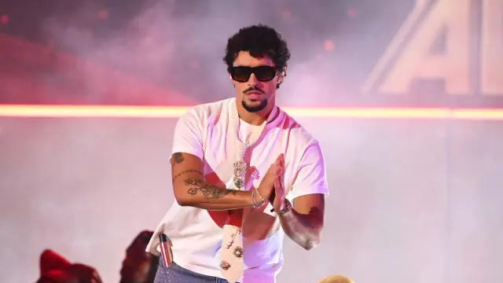

Bad Bunny
Biografía
Benito Antonio Martínez Ocasio (Bayamón, 10 de marzo de 1994), conocido artísticamente como Bad Bunny, es un cantante, compositor y productor discográfico puertorriqueño. Caracterizado por su voz grave, se especializa en estilos como reguetón y trap latino, aunque también ha explorado otros géneros musicales. Ha sido descrito por diversos medios como una de las figuras más influyentes del pop global por su impacto digital.
Comenzó a ganar popularidad en SoundCloud y firmó con el sello Hear This Music mientras trabajaba en un supermercado y estudiaba en la Universidad de Puerto Rico. Tras el éxito de «Soy peor» en 2016, alcanzó fama internacional colaborando con artistas como Cardi B y Drake en temas como «I Like It» y «Mia». Su álbum debut X 100PRE (2018) ganó el Grammy Latino a mejor álbum urbano y fue incluido entre los mejores álbumes de la historia por Rolling Stone.
En 2019 lanzó el álbum colaborativo Oasis (2019) junto a J Balvin, con éxitos como «Qué pretendes» y «La canción». Posteriormente consolidó su carrera con el sencillo «Callaíta» junto al productor Tainy.
En 2020 participó en el espectáculo de medio tiempo del Super Bowl LIV junto a Shakira y fue portada de Rolling Stone. Ese mismo año lanzó el álbum sorpresa Las que no iban a salir (2020), seguido por YHLQMDLG (2020) y El Último Tour del Mundo (2020), este último marcando un cambio hacia un sonido más experimental.
En 2022 lanzó Un Verano Sin Ti (2022), un álbum de gran éxito comercial y crítico que debutó en el número uno del Billboard 200, convirtiéndose en uno de los álbumes en español más importantes de la historia.
En 2023 publicó Nadie Sabe Lo Que Va a Pasar Mañana (2023), un proyecto centrado en el trap, y posteriormente inició su gira Most Wanted Tour en 2024, donde volvió a interpretar sus temas más antiguos.
En 2024 colaboró con Myke Towers en «Adivino», con Rauw Alejandro en «Qué pasaría...» y lanzó un sencillo en homenaje a las víctimas del huracán María titulado «Una Velita».
En 2025 lanzó DeBÍ TiRAR MáS FOToS (2025), acompañado de una residencia musical en Puerto Rico bajo el espectáculo No me quiero ir de aquí, donde combinó música y puesta en escena teatral.
Bad Bunny se convirtió en el artista hispanohablante más escuchado en Spotify durante varios años consecutivos. Ha sido incluido en listas de las personas más influyentes del mundo por revistas como Time y reconocido como una de las figuras más importantes de la música contemporánea. En 2026 ganó el Grammy a Álbum del Año por DeBÍ TiRAR MáS FOToS (2025) y encabezó el espectáculo de medio tiempo del Super Bowl LX, considerado uno de los más vistos de la historia.
Discografía
- 2018: X 100pre
- 2019: Oasis (con J Balvin)
- 2020: YHLQMDLG
- 2020: El último tour del mundo
- 2022: Un verano sin ti
- 2023: Nadie sabe lo que va a pasar mañana
- 2025: Debí tirar más fotos
